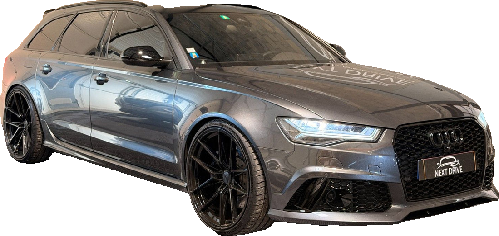
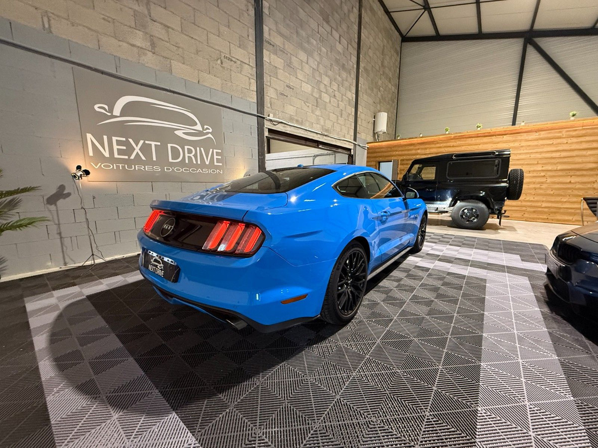
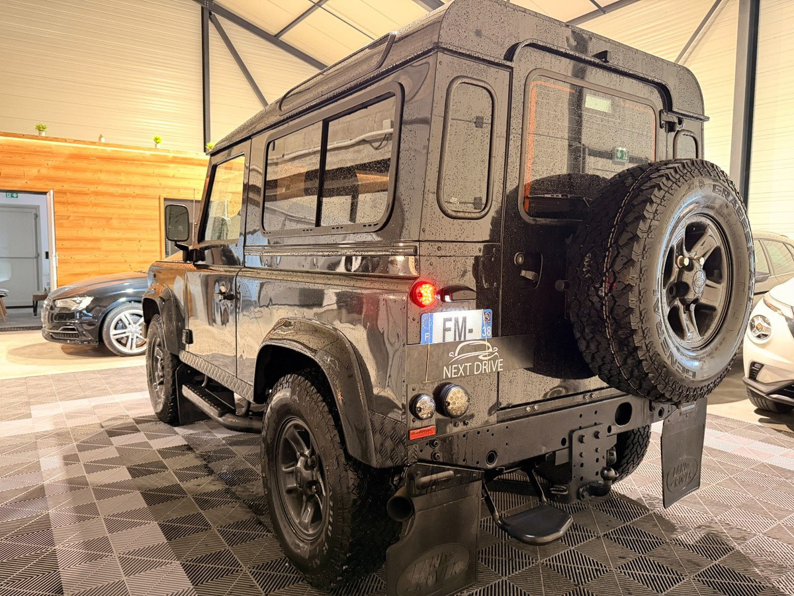
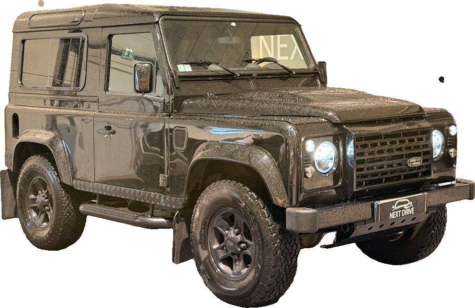
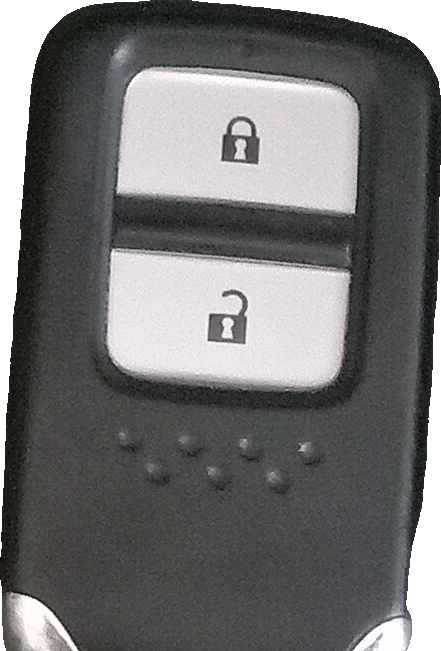
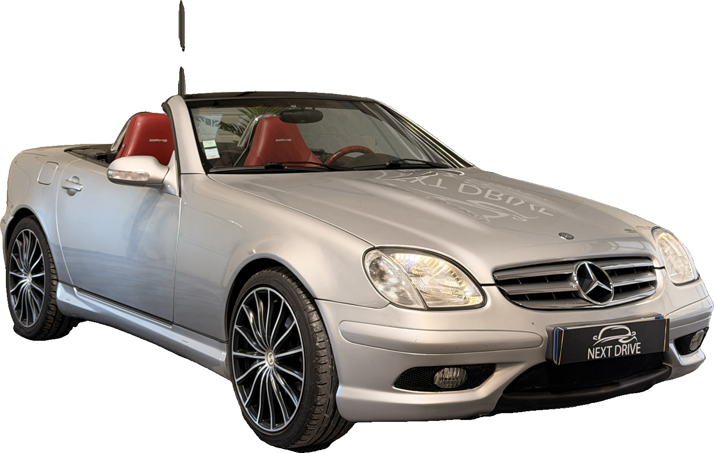
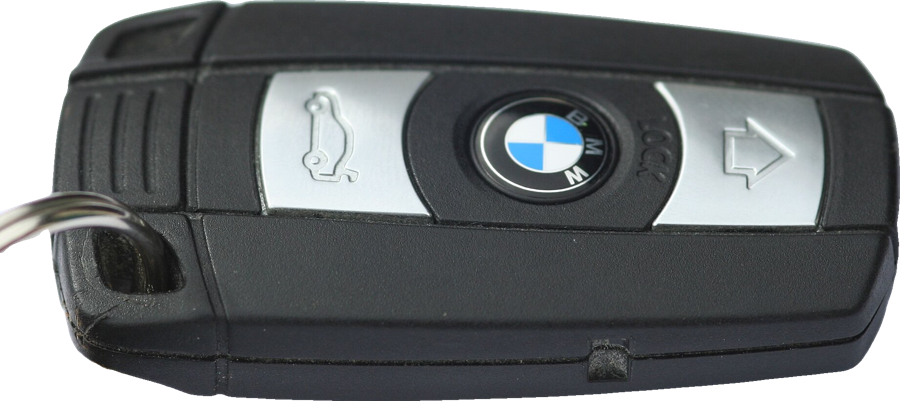

N° 01 — Le constat
Dépôt-vente de voitures d’occasion
JT NEXT DRIVE · EST. 2026 · SAVOIE
Étape 01 / 04

Une offre juste, fondée sur le marché réel. Gratuite, sans engagement, en une heure en moyenne.
Étape 02 / 04


Préparation, photos professionnelles et annonces diffusées partout. Votre voiture sous son meilleur jour.
Étape 03 / 04

Étape 04 / 04
Fonds sécurisés jusqu’à la remise des clés.

0 avis Google
« Une réactivité parfaite ! »
Thomas S.

jt-nextdrive.vercel.app
06 82 71 77 39
